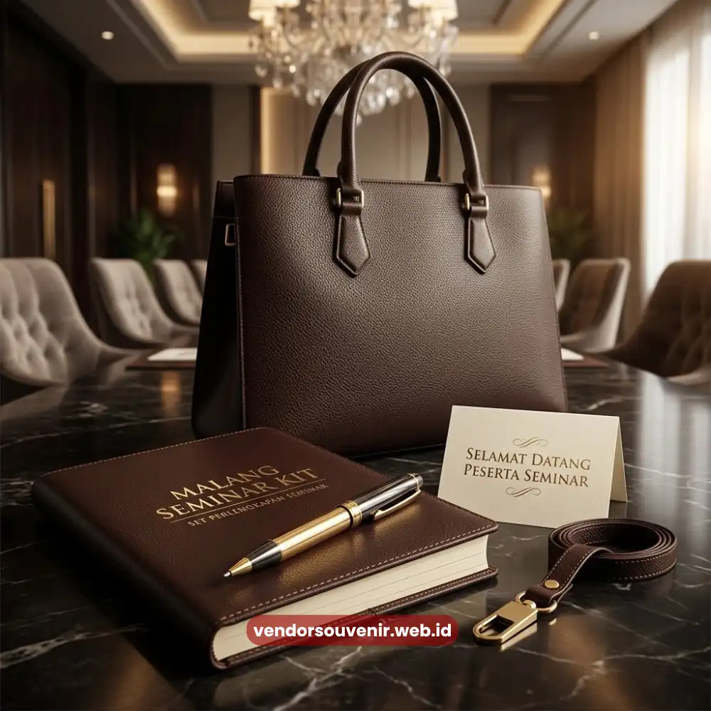
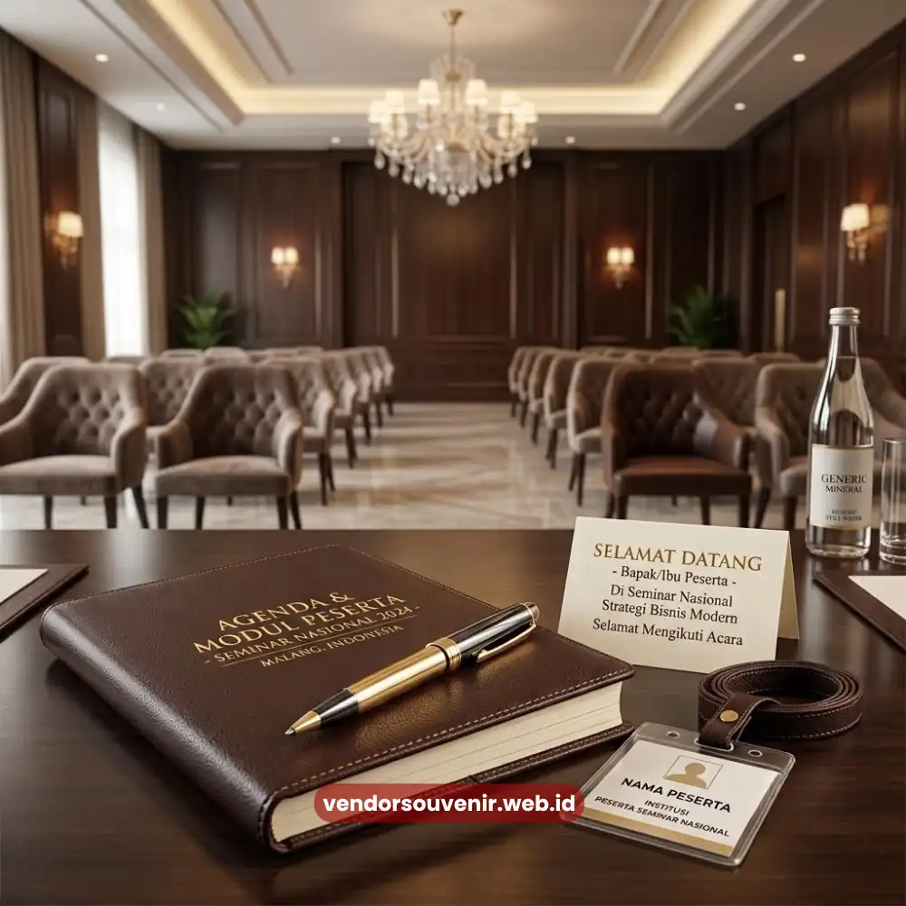

Daftar Isi
Perlengkapan seminar kantor adalah kumpulan alat tulis, souvenir, dan aksesori pendukung yang disiapkan untuk kebutuhan peserta selama acara seminar atau pelatihan korporat berlangsung.
Perlengkapan ini mencakup notebook, pulpen, tas jinjing, lanyard, tumbler, hingga goodie bag yang dikemas menjadi satu paket rapi bagi setiap peserta.
Memilih perlengkapan yang tepat berperan besar dalam menentukan kelancaran acara sekaligus citra profesional perusahaan penyelenggara.
- Perlengkapan seminar kantor mencakup alat tulis, tas, lanyard, tumbler, hingga goodie bag peserta.
- Kualitas perlengkapan memengaruhi kenyamanan peserta dan kesan profesional acara.
- Kesalahan umum meliputi perencanaan mendadak dan minimnya kesesuaian dengan tema acara.
- Anggaran perlu disesuaikan dengan skala peserta, durasi acara, dan tingkat kustomisasi yang diinginkan.
- Pemesanan custom dengan waktu produksi yang cukup menghasilkan kualitas paling optimal.
Apa Saja Perlengkapan Seminar Kantor yang Wajib Disiapkan?
Kebutuhan dasar sebuah seminar kantor umumnya dimulai dari alat tulis peserta, yakni notebook dan pulpen yang digunakan untuk mencatat materi selama sesi berlangsung.
Kedua item ini menjadi standar minimum yang hampir selalu ada di setiap acara seminar korporat, apa pun skala dan temanya.
Selain alat tulis, tas jinjing atau tote bag berperan sebagai wadah utama yang menyatukan seluruh perlengkapan peserta dalam satu kemasan rapi.
Lanyard dan name tag turut melengkapi kebutuhan identifikasi peserta, terutama untuk seminar dengan jumlah peserta yang cukup besar dan memerlukan sistem pengenalan yang jelas antarpeserta maupun panitia.
Tumbler atau botol minum semakin sering ditambahkan sebagai pelengkap fungsional, mengingat durasi seminar yang panjang membuat kebutuhan hidrasi peserta menjadi perhatian tersendiri bagi panitia.
Untuk acara dengan nuansa apresiasi lebih tinggi, goodie bag berisi kombinasi item-item tersebut kerap disiapkan sebagai bentuk penghargaan sekaligus media branding perusahaan kepada peserta.
Bagaimana Memilih Perlengkapan Seminar Kantor yang Berkualitas?
Kualitas perlengkapan seminar tidak hanya dinilai dari tampilan luar, melainkan juga dari daya tahan material dan kenyamanan penggunaan selama acara berlangsung.
Notebook dengan kertas yang nyaman ditulis dan sampul yang kokoh, misalnya, akan memberikan pengalaman berbeda dibandingkan notebook dengan kualitas seadanya yang mudah rusak.

Perlengkapan seminar di meja peserta menciptakan kesan terorganisir
Kesesuaian desain dengan identitas visual perusahaan turut menjadi pertimbangan penting.
Perlengkapan yang dicetak dengan logo, warna, dan tipografi yang konsisten dengan panduan brand perusahaan akan memperkuat kesan profesional sekaligus memperjelas identitas penyelenggara di mata peserta maupun tamu undangan.
Faktor fungsi juga tidak boleh diabaikan. Perlengkapan sebaiknya dipilih berdasarkan relevansi terhadap kebutuhan aktual peserta selama acara.
Jangan sekadar mengikuti tren barang populer tanpa mempertimbangkan kegunaannya. Perlengkapan yang relevan dan benar-benar terpakai akan memberikan nilai balik investasi yang lebih baik dibandingkan barang yang hanya menjadi pajangan setelah acara usai.
Apa Saja Kesalahan Umum saat Menyiapkan Perlengkapan Seminar?
Salah satu kesalahan yang paling sering terjadi adalah perencanaan yang dilakukan secara mendadak, sehingga waktu produksi menjadi sangat terbatas.
Hal ini berisiko menurunkan kualitas hasil akhir. Perlengkapan yang dipesan terburu-buru cenderung minim opsi kustomisasi dan rentan mengalami keterlambatan pengiriman.
Kesalahan lain yang kerap luput dari perhatian adalah ketidaksesuaian antara jenis perlengkapan dengan tema atau skala acara.
Seminar formal berskala besar tentu membutuhkan pendekatan berbeda dibandingkan pelatihan internal skala kecil, baik dari segi jumlah item maupun tingkat kustomisasi yang diperlukan.
Mengabaikan perbedaan ini berpotensi membuat perlengkapan terasa kurang pas dengan suasana acara secara keseluruhan.
Minimnya perhatian terhadap konsistensi kualitas antarunit juga menjadi kesalahan umum, terutama pada pemesanan dalam jumlah besar.
Tanpa proses pengecekan yang memadai, perbedaan kualitas antar batch produksi dapat menurunkan kesan rapi yang seharusnya ditampilkan kepada seluruh peserta secara merata.
Berapa Kisaran Biaya Perlengkapan Seminar Kantor?
Biaya perlengkapan seminar kantor pada umumnya bervariasi tergantung jenis item, tingkat kustomisasi, dan jumlah pesanan yang dibutuhkan.
Semakin lengkap isi paket dan semakin tinggi kualitas material yang dipilih, biaya per unit yang dikeluarkan juga cenderung semakin tinggi.
Sebagai gambaran umum, biaya per unit biasanya dapat ditekan lebih efisien ketika jumlah pesanan bertambah.
Mengingat sebagian biaya produksi bersifat tetap dan terbagi ke lebih banyak unit. Oleh karena itu, penting bagi panitia untuk menentukan estimasi jumlah peserta secara akurat.
Tujuannya agar anggaran yang disusun benar-benar mencerminkan kebutuhan riil acara tanpa pemborosan maupun kekurangan stok.

Bagaimana Cara Memesan Perlengkapan Seminar Kantor secara Custom?
Proses pemesanan custom umumnya diawali dengan konsultasi mengenai kebutuhan acara, mencakup jumlah peserta, tema seminar, serta jenis item yang diinginkan.
Tahap ini penting untuk memastikan seluruh perlengkapan yang disiapkan benar-benar relevan dengan karakteristik acara yang akan diselenggarakan.
Setelah kebutuhan disepakati, proses berlanjut ke tahap desain dan penyesuaian identitas visual, termasuk penempatan logo dan pemilihan warna sesuai panduan brand perusahaan.
Waktu produksi perlu diperhitungkan secara realistis, terutama untuk pemesanan dalam jumlah besar, agar seluruh perlengkapan siap tepat waktu tanpa mengorbankan kualitas hasil akhir.
Perlengkapan seminar kantor yang direncanakan dengan matang, mulai dari pemilihan item, kualitas material, hingga konsistensi branding, akan memberikan dampak nyata terhadap kelancaran acara.
Perencanaan yang dilakukan lebih awal juga membuka ruang untuk kustomisasi yang lebih maksimal tanpa terburu-buru menjelang hari pelaksanaan.
Butuh Bantuan Merancang Perlengkapan Seminar Kantor?
Tim ahli kami siap membantu Anda menyusun perlengkapan eksklusif yang menarik.
Pilihan barang akan disesuaikan dengan ketersediaan budget dan kebutuhan Anda.
Seluruh desain akan kami selaraskan dengan identitas visual perusahaan Anda.
Dapatkan penawaran harga terbaik untuk pesanan massal!
FAQ Seputar Perlengkapan Seminar Kantor
Apa saja item dasar yang wajib ada dalam perlengkapan seminar kantor?
Item dasar yang umumnya wajib ada meliputi notebook, pulpen, tas jinjing, dan lanyard, sementara tumbler serta goodie bag menjadi pelengkap tambahan sesuai kebutuhan acara.
Apakah perlengkapan seminar kantor bisa dipesan dalam waktu singkat?
Sebagian item dapat diproses dalam waktu relatif singkat, namun untuk hasil dengan kustomisasi penuh dan kualitas optimal, waktu pemesanan yang lebih panjang tetap disarankan.
Apakah perlu mencetak logo perusahaan di semua item perlengkapan?
Tidak perlu di semua item, namun disarankan minimal pada item utama seperti notebook dan tas agar identitas brand tetap konsisten tanpa terasa berlebihan.
Bagaimana menentukan jumlah perlengkapan yang harus dipesan?
Jumlah pesanan sebaiknya mengacu pada estimasi peserta yang telah dikonfirmasi, ditambah sedikit cadangan untuk mengantisipasi kebutuhan tak terduga saat hari pelaksanaan.
Apakah perlengkapan seminar kantor cocok untuk acara internal skala kecil?
Sangat cocok, karena perlengkapan seminar tetap berfungsi meningkatkan kenyamanan dan kesan profesional acara meskipun jumlah peserta tergolong kecil hingga menengah.
Maroon Souvenir
Partner Corporate Gift terpercaya di Indonesia. Berpengalaman melayani ratusan perusahaan sejak 2018.
Lihat Portofolio Kami